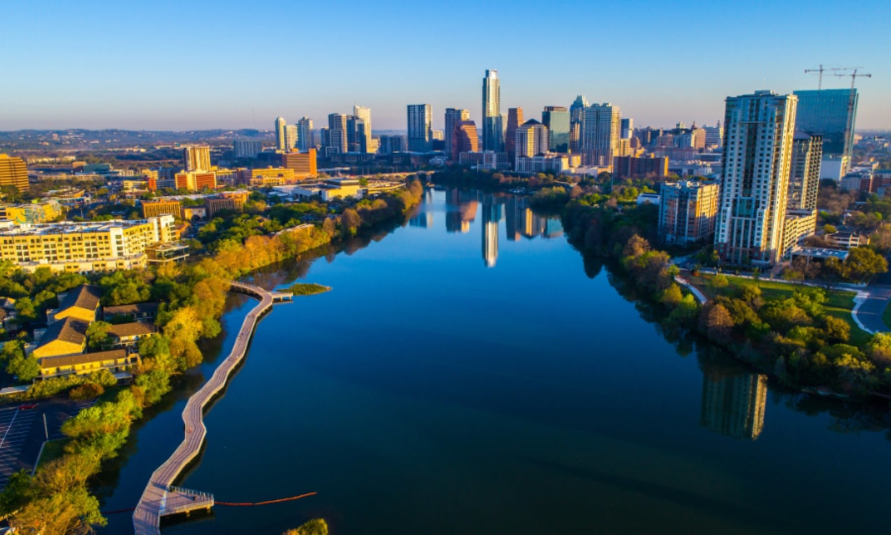

Keep Austin Weird!
Austin, the vibrant capital of Texas known for its eclectic live-music scene, diverse culinary offerings, and stunning outdoor spaces. Nestled in the heart of the Hill Country, Austin boasts a unique blend of urban sophistication and natural beauty. Whether you're exploring the bustling downtown area, enjoying the scenic trails and parks, or indulging in the city's renowned food and cultural festivals, Austin offers something for everyone. Discover why this dynamic city is a favorite destination for visitors and a beloved home for locals.
